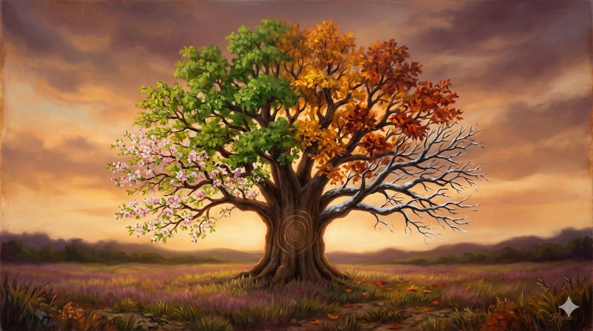

Not a timeline, and not the stages — those are the work, and the work lives at the Gather. WHEN is the rhythm by which the village runs and renews itself: two nested loops, the cadence of doing inside the loop of improving.
Every operating model has both loops. One is always louder than the other — and which one is set by where the business wins or loses.
The repeating beat of the work itself — the season that comes round and round. Its shape is the business: cohorts here, matters in a law firm, cases in a clinic, contracting rounds for an orchestrator. This is the loop you can feel; the one with a calendar.
The slow turn by which the model gets better: measure → learn → adapt → measure again. What each cycle reveals feeds back and changes the next — the only part of WHEN the Gather does not already contain, and the reason the model is alive rather than fixed.
Law firms, clinics, manufacturers, PowerVox's products. Get the cadence right and you win. The renewal loop matters but it's the quiet partner.
A market orchestrator (NHSE), a regulator, an R&D body, a fund. The real work is steering and re-steering the system; running it day to day is almost the quiet partner.
Two honest caveats. Sometimes they are genuinely balanced — a scale-up running hard and pivoting at once; "both loud" is a legal answer and it signals a business under unusual strain. And dominance shifts over a life: PowerVox is delivery-dominant today, but its whole strategy is the outer loop waking up. The diagnostic is "where are you now", not a permanent label — which is exactly why re-running the model every couple of years earns its keep.
The cadence encoded, so the rhythm is a working part of the model and not a hope. This is the Village Clock from the Burrows, read as a year.
Each turn feeds the next: the beta measures leaders and the evidence sharpens the construct; the construct improves the wares; delivering the wares generates more evidence; and across engagements the pattern library compounds so the method itself gets better. Measure feeds shape — the village does not just repeat, it ripens. Held to the Observatory's threshold, never moved on commercial grounds.